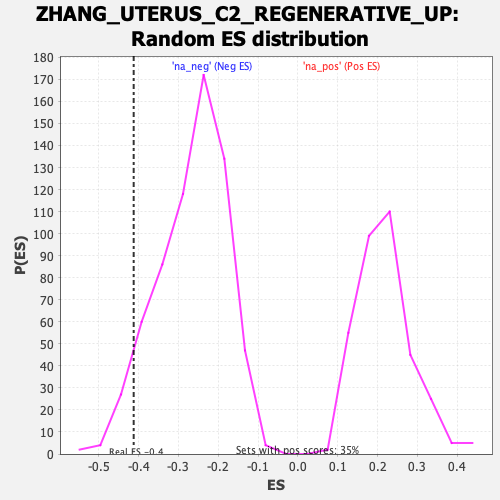

Profile of the Running ES Score & Positions of GeneSet Members on the Rank Ordered List
| Dataset | Lactate high vs low_Ranked |
| Phenotype | NoPhenotypeAvailable |
| Upregulated in class | na_neg |
| GeneSet | ZHANG_UTERUS_C2_REGENERATIVE_UP |
| Enrichment Score (ES) | -0.41233346 |
| Normalized Enrichment Score (NES) | -1.5527589 |
| Nominal p-value | 0.05351682 |
| FDR q-value | 0.12224496 |
| FWER p-Value | 0.989 |
| SYMBOL | RANK IN GENE LIST | RANK METRIC SCORE | RUNNING ES | CORE ENRICHMENT | |
|---|---|---|---|---|---|
| 1 | Egfl6 | 131 | 1.514 | 0.0076 | No |
| 2 | Arg2 | 303 | 1.219 | -0.0079 | No |
| 3 | Cdo1 | 362 | 1.150 | 0.0116 | No |
| 4 | Tceal9 | 409 | 1.090 | 0.0331 | No |
| 5 | Sox17 | 450 | 1.047 | 0.0552 | No |
| 6 | S100g | 563 | 0.941 | 0.0498 | No |
| 7 | Tgfbi | 651 | 0.851 | 0.0496 | No |
| 8 | Igfbp7 | 860 | 0.655 | 0.0028 | No |
| 9 | Mgp | 898 | 0.630 | 0.0118 | No |
| 10 | Eef1b2 | 1352 | -0.553 | -0.1197 | No |
| 11 | Mt2 | 1478 | -0.581 | -0.1416 | No |
| 12 | Echdc2 | 1769 | -0.679 | -0.2148 | No |
| 13 | Siva1 | 1794 | -0.685 | -0.1997 | No |
| 14 | Gstm2 | 1848 | -0.706 | -0.1934 | No |
| 15 | Aldh1a1 | 2205 | -0.861 | -0.2824 | No |
| 16 | Gpx2 | 2598 | -1.211 | -0.3715 | Yes |
| 17 | Rbp1 | 2599 | -1.213 | -0.3306 | Yes |
| 18 | Gstm5 | 2715 | -1.392 | -0.3218 | Yes |
| 19 | Clu | 2876 | -1.874 | -0.3116 | Yes |
| 20 | Ifitm1 | 2906 | -2.063 | -0.2516 | Yes |
| 21 | Pigr | 2910 | -2.092 | -0.1821 | Yes |
| 22 | Kctd14 | 2928 | -2.194 | -0.1137 | Yes |
| 23 | Ltf | 3035 | -4.454 | 0.0013 | Yes |
